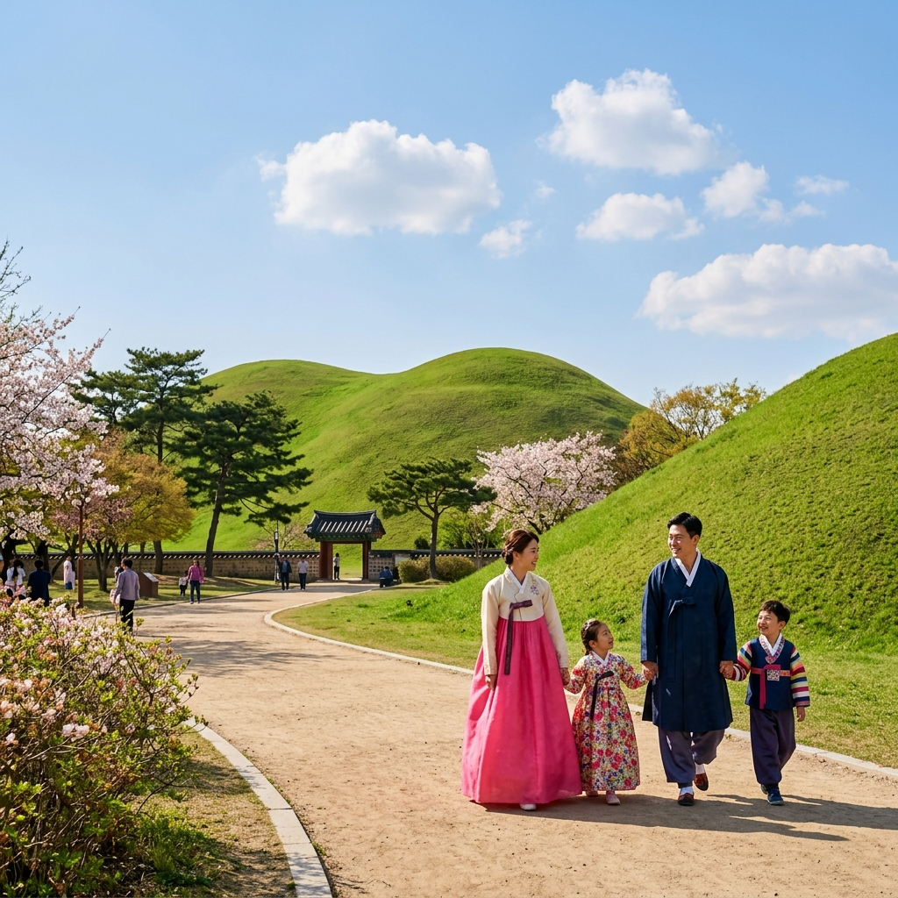

🛡️ 我們的溫馨行動準則
自在飲食無負擔
貼心準備：為媽媽準備無牛骨成分的高湯底；為長輩與孩子避開辣味與胡椒。點餐時彈性分區分桌，或是選擇清燉好滋味，讓全家都開心。
輕鬆交通守則
機場來回皆安排空間寬敞的 7 人座 Jumbo Taxi。遇到市區爬坡直接攔「2 台計程車」分乘，平地則自在體驗當地 KTX 與捷運。
專屬醫美休養期 (Day 6)
保養後首重休息與避光，行程將轉移至舒適的室內百貨或地下街，配戴口罩避開冷風與日曬，買得開心也顧到好氣色。
💬 溝通達人字卡 (點擊卡片即可複製)
給餐廳阿姨看：飲食特製需求
어머니는 소고기를 드시지 않습니다. 소고기 육수도 빼주세요. 그리고 아이와 어르신이 먹을 거라 청양고추, 고춧가루, 후추, 다대기를 완전히 빼주세요.
我們不吃牛與牛骨湯。因為有小孩與長輩，請完全不要加青陽辣椒、辣椒粉、胡椒和紅色辣醬。
給計程車司機看：我們分兩台車
기사님, 일행이 다른 택시를 타고 뒤따라오고 있습니다. 이 주소로 곧장 가주시면 됩니다.
司機大哥您好，我們的親友搭乘另一台計程車跟在後面，請直接載我們前往該地址，謝謝您。
📅 家族旅行美好行程一覽
Day 1 ｜ 滿載期待，啟航與舒適首泊
5/9 (六)- 17:55-21:35 🛫 搭乘德威航空 (TW676) 順利降落金海機場。
- 22:15-23:00 🚕 安排寬敞的 Jumbo Taxi 直達飯店，大家早點休息儲備體力。
🏨 住宿：Busan Station City Hotel 地圖
Day 2 ｜ 穿越時空，慶州古都韓服體驗
5/10 (日)

Day 4 ｜ 飛越松島與海雲台日落時光
啟用 VBP 暢遊卡 (48H)- 11:00-12:30 🚠 【VBP 免費兌換】搭乘松島海上纜車 地圖，在涼爽舒適的車廂內盡覽海洋美景。
- 13:00-14:30 🍲 特色午餐：美味馬鈴薯排骨湯 地圖
香辣排骨鍋與清燉大骨湯雙管齊下。 - 14:30-15:30 🧳 轉換陣地入駐海雲台。
🏨 住宿：Felix by STX 海雲台 地圖 (備有洗衣機隨時洗淨衣物) - 16:00-18:00 🌇 【VBP 免費兌換】釜山 X the Sky 觀景台 地圖，在全室內的高空俯瞰整片海雲台浪漫夕陽。
- 18:30-19:30 🍲 小吃尋寶：海雲台傳統市場刀削麵 地圖。
- 20:00-23:00 🧖♂️ 【VBP 免費兌換】新世界 Spa Land 汗蒸幕 地圖 洗去旅遊疲勞，享受暖心放鬆。
Day 5 ｜ 樂天童話世界與天空膠囊列車
VBP 暢遊卡發揮優勢
- 09:30-11:30 🏎️ 【VBP 免費兌換】機張 Skyline Luge 斜坡滑車 地圖，微風中全家享受戶外樂趣。
- 11:45-13:00 🍲 午餐時間：樂天 Outlet 美食街或附近韓牛餐廳 地圖。
- 13:00-15:30 🎠 【VBP 免費兌換】釜山樂天世界 地圖
分流同樂：充滿活力的去玩遊樂設施；長輩們則到冷氣咖啡廳喝下午茶，或是趁空在 Outlet 聰明血拚。 - 16:00-18:00 🚊 絕美海岸線：前往尾浦站 地圖 搭乘天空膠囊小火車，以最美的海景為背景，在青沙浦站 地圖 會合共賞美麗夕照。
- 18:30-20:00 🍲 晚餐享受：青沙浦夢幻烤貝 地圖
烤網特意分區處理起司辣醬烤貝和清甜原味烤貝。回飯店後順道利用洗衣機洗淨全家的衣物。
Day 6 ｜ 專屬保養時光與室內避光購物祭
- 09:00-10:15 🏛️ 【VBP 最後體驗】趕在失效前入場 Museum 1 現代美術館 地圖 看場藝術展。
- 10:30-11:30 💆♀️ 醫療保養：西面 Fillstox Clinic 地圖 輕鬆進行專屬美顏療程準備。
- 12:00-13:30 🍲 午間分流：先生帶領長輩與孩子前往西面樂天百貨美食街 地圖 先行享用清燉牛骨或拌飯。
- 14:00-14:30 🥗 療程結束後，夫妻倆單獨品嚐水冷麵等消暑輕食，避免流汗。
- 15:00-17:30 🛍️ 地下街歡樂購：全家會合於西面地下街無懼日曬採買 地圖，直接結帳退稅超方便。
- 18:00-19:30 🍲 頂級晚宴：海雲台烤肉饗宴 地圖
分成兩爐，一邊清甜無調味，一邊熱辣烤肉。貼心安排讓太太遠離高溫烤爐，舒適享受大餐。
Day 7 ｜ 豐富回憶，微笑從容返程
5/15 (五)- 08:30-10:30 ☕ 在美麗的飯店悠閒享用早餐、打包行李與旅行戰利品。
- 11:00-12:00 🚕 搭乘大型計程車，懷著滿滿笑容前往金海機場 地圖。
- 12:00-13:30 辦理退稅手續，在機場美食街為旅程作最後回味收尾。
- 15:00-16:50 🛫 搭乘德威航空 (TW675) 平安返回溫暖的家！